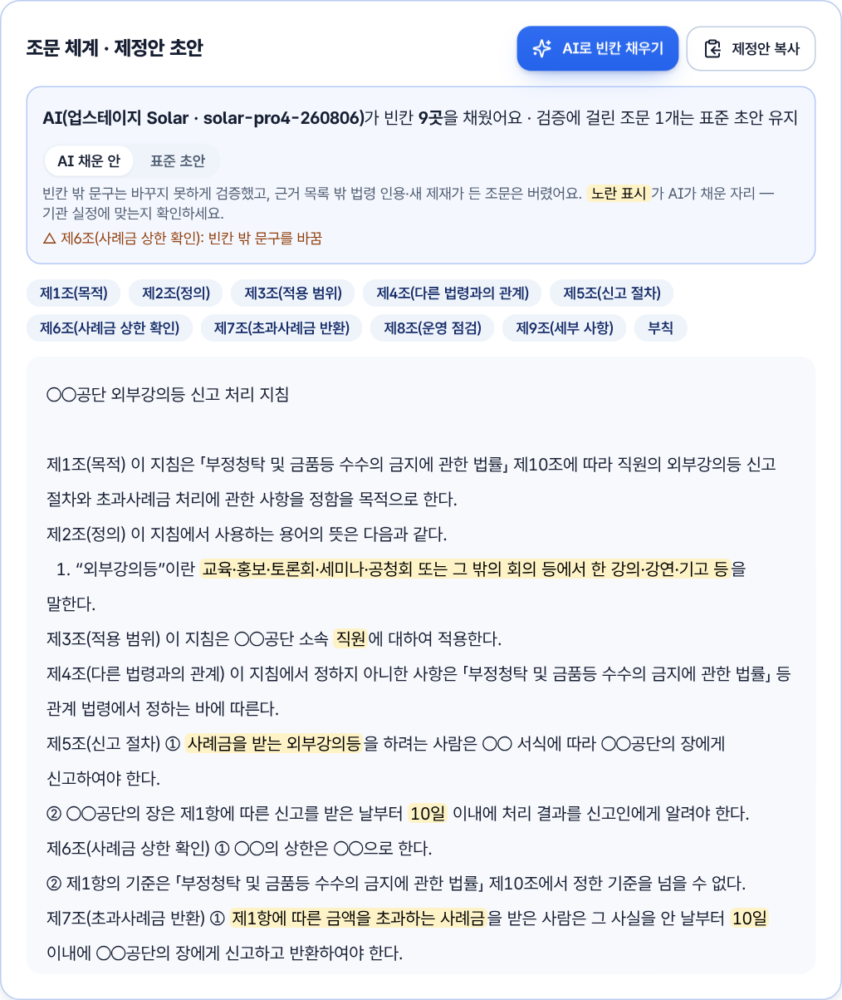
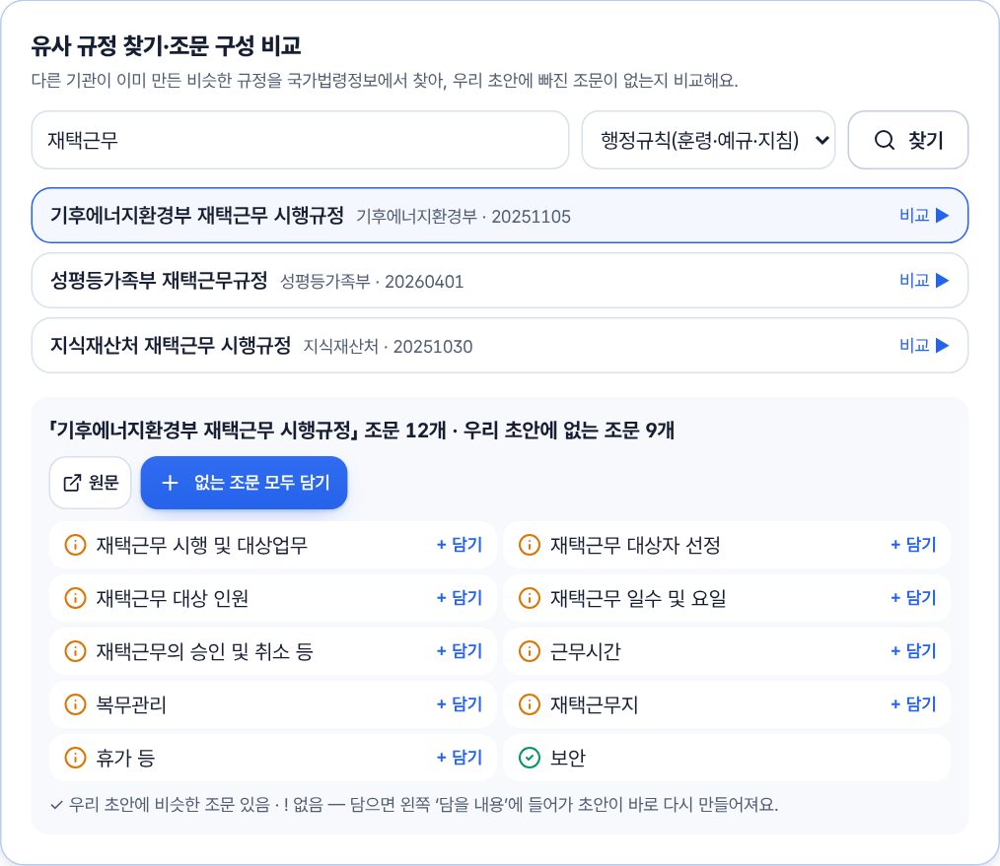
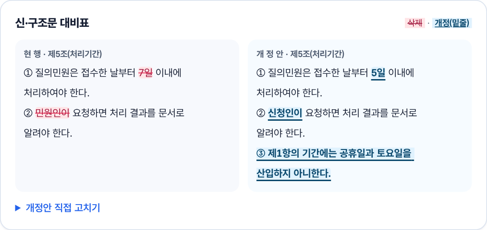
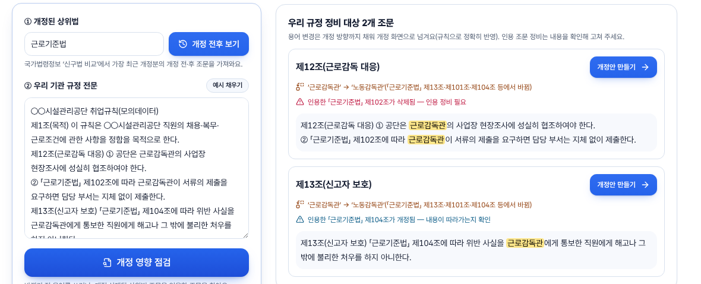

규정 제·개정 지원 — 제정·개정 문서 세트, 유사 규정 비교, 인용 정정, 상위법 대조를 한 화면에서
| 실행 환경 |
· 오른쪽 위 스위치로 공직자 모드로 바꾸면 상단에 제·개정 지원 · 자체규정 점검 메뉴가 나옵니다. ②·③도 판례·실시간 법령을 클라우드 서버를 거쳐 받아 심사위원 PC에 인증키·IP 등록이 필요 없습니다. | |||||||||||||||
|---|---|---|---|---|---|---|---|---|---|---|---|---|---|---|---|---|
| 설치·실행 절차 |
① 주소창에 https://lawon.onrender.com(첫 접속이 늦으면 30초~1분) · ② GitLab의 LAW-ON_share.html(또는 웹 바닥글 ‘공유판 내려받기’)을 더블클릭 ③ Python 실행판(공공 GitLab 산출물의 law-on-python.zip)
| |||||||||||||||
| LLM 연결 설정 |
.env.example을 .env.local로 복사해 값만 넣고, 화면 왼쪽 위 ‘AI 모델’ 메뉴에서 즉시 전환(키는 서버에만 둠).
· 제·개정 지원의 뼈대(조문 체계·대비표·인용 정정)는 AI 없이 법제 표준 문형과 원문 대조로 만들어 어떤 모델·폐쇄망에서도 같은 결과입니다. 위 모델은 제정안 AI 빈칸 채우기(가드 검증)와 근거 상담·민원 회신 초안에 쓰입니다. | |||||||||||||||
| 모의데이터 안내 |
제출 폴더 모의데이터/(GitLab submission/mock-data/) — 가상 기관 이름으로 새로 쓴 규정, 개인정보·민감정보 없음
투입: 공직자 모드 → 자체규정 점검 → ‘모의데이터로 바로 체험’ 한 번(검증까지 자동) 또는 끌어다 놓기. 원본은 브라우저에서 읽기만 하고 수정·이동·삭제하지 않으며 결과는 화면·Word로 따로 만듦. 제·개정 지원의 ‘예시 채우기’(외부강의등 신고 처리 지침 제정, ○○공단 민원 처리 규정 조 번호 정리)도 같은 가상 자료입니다. |
| 기능 사용 순서 |
 흐름 1 — 제정안: AI가 채운 빈칸(노란 표시)·가드가 막은 조문  흐름 1 — 유사 규정 비교: 빠진 조문 9개  흐름 2 — 신구조문대비표(삭제·밑줄)  흐름 3 — 상위법 개정(근로감독관→노동감독관)에 따른 우리 규정 정비 대상 |
|---|
| 과제 카드 대응·검증 |
· 자동 시험: 제·개정·조 번호 정리·유사 규정 비교·AI 빈칸 채우기·AI 개정안 가드·상위법 개정 전후 비교·자체규정 AI 검토·한 줄 제정 단위시험 48건 포함 TypeScript 205건 · Python 55건, 웹판↔실행판 결과 동일성 64건 — npm test, npm run eval(성적표 submission/정확도_성적표.md) | ||||||||||||||||||||||||
|---|---|---|---|---|---|---|---|---|---|---|---|---|---|---|---|---|---|---|---|---|---|---|---|---|---|
| 기관별 설정 ·이관 |
| ||||||||||||||||||||||||
| 알려진 제약 사항 |
| ||||||||||||||||||||||||
| 개발 경위 요약 |
문제 인식지침을 새로 만들거나 고칠 때 담당자는 무엇부터 해야 하는지, 어떤 문서가 필요한지 막막합니다. 다른 기관의 유사 규정을 찾아 참고하고, 상위법 위임 범위와 조문 체계를 확인해 조문을 손으로 쓰며, 신구조문대비표·부칙을 따로 만들고, 조 번호가 밀리면 인용 정정 대상을 눈으로 찾느라 변경 범위를 놓칠 위험이 있습니다. 상위법이 바뀌어도 기관 규정이 따라가지 못해 감사 지적과 노사 분쟁의 원인이 되기도 합니다. 접근 방식① 틀리면 안 되는 부분은 결정적으로, 채우는 부분은 AI로 — 조문 체계·신구조문대비표·인용 정정·정합성 점검은 법제 표준 문형과 원문 대조로 만들어 같은 입력에 늘 같은 결과가 나오고 형식 오류·지어낸 조문이 없습니다. 기관마다 다른 빈칸은 국산 AI(Solar)가 근거 조문에 맞춰 채우되, 빈칸 밖 문구를 바꾸거나 근거 밖 법령·새 제재를 쓰면 가드가 그 조문을 버립니다. ② 근거는 공식 원문에서 — 상위 조문은 국가법령정보 공동활용 API의 현행 원문을 쓰고, 위임 문구와 기한·금액 기준을 원문에서 읽어 초안에 맞춥니다. 유사 규정도 같은 API로 실시간 검색합니다. ③ 한 흐름으로 — 자체규정 점검(상충 발견) → 개정(수정안·대비표) 또는 제정(조문 체계) → 유사 규정 비교 → 조 번호 정리 → 문서 세트·Word까지 한 화면에서 이어지게 했습니다. ④ 바로 옮겨 쓸 수 있게 — 원본 파일은 브라우저에서 읽기만 하고 서버로 보내지 않으며(AI 검토에는 조문 글만, 개인정보 가림), 로직은 단위시험이 붙은 순수 함수로 분리하고, 모델 비종속·폐쇄망 실행판을 함께 두었습니다. 기대 효과제정안 초안·대비표·제정(개정)이유·입법예고문을 한 번에 만들어 문서 작성 시간을 줄이고, 유사 규정 비교로 빠진 조문을 미리 찾으며, 인용 정정 누락과 위임 없는 의무 부과 같은 법제 오류를 줄입니다. 규범 종류와 기관명만 바꾸면 되므로 중앙부처·지자체·공공기관이 공통으로 쓸 수 있습니다. |